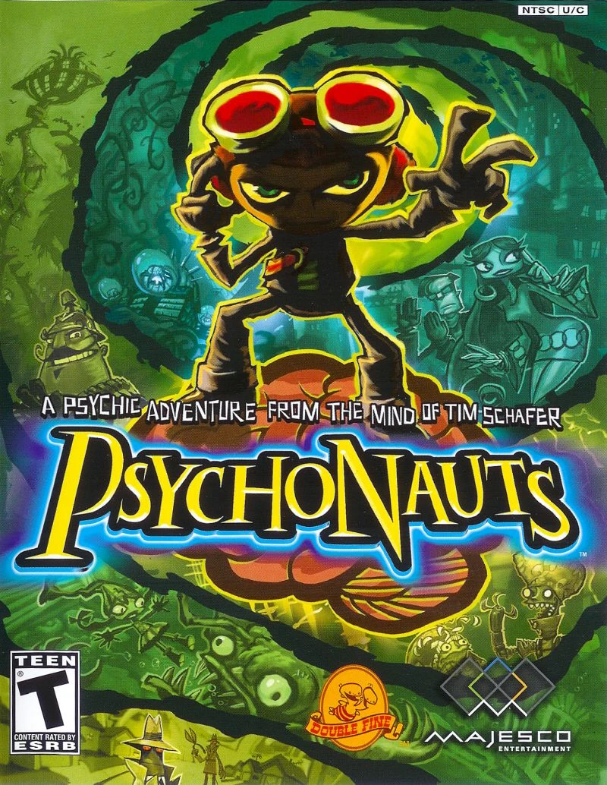
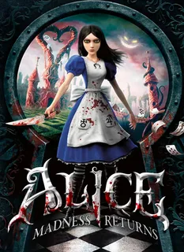
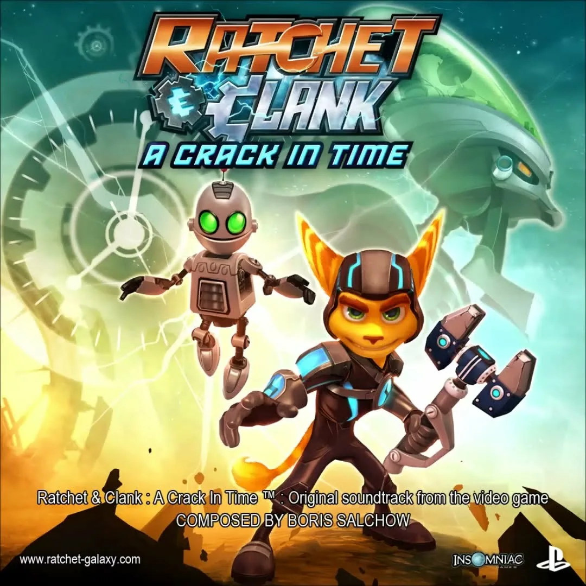

There are just too many damn games being released each year. There’s just no way a middle-class working person has all the time to invest so many hours upon a video game. For the fact that video games are charging more than their retailed price (thanks to loot boxes, DLC, and microtransactions as useless services) it’s no wonder why we’ve been really picky on the games that we want to play. Can you imagine what life without the internet? Word of mouth wouldn’t be good enough and lack of recommendations would have kept all of these products in obscurity. Thanks to the power of the internet, so many games have a chance to gather a cult following. Though games like Beyond Good & Evil, Psychonauts, Grim Fandango, Shenmue, Okami, Planescape: Torment, System Shock, Ico and Spec Ops: The Line are great examples of games that did earned their cult following over the years (you will not see any of those games that are named in this list), there are many more that still remains to get noticed. We gamers have been crying to developers for originality to keep their interest, but those that listened to us, it never becomes successfuly. Though what we consider original isn’t accessable to casual games (the rely on brand recognition) and are doomed to fail at the market, we can’t allow such masterpieces to fail forever. There has to be a time where these games finally gets played by newer audiences, have the media recognize its importances (and hopefully apologize for ignoring it for so long), and have its place in gaming histoy.

How does a game like Alice: The Madness Returns suprass it’s mediocre sequel, went above imagination, made gameplay so violent and creative, and visuals so gothically stunning become disapproved by critics and audiences at large? A bizarre, yet beautiful world. It’s one of the ways I can describe the Wonderland in the sequel of McGee’s masterpiece. From the extensive amount of detail to the art direction it does nothing less than blow your mind. As a plus, if you happen to have an NVIDIA card you’ll be enjoying even more in-depth effects from this masterpiece as it takes full advantage of PHYSX. Pages flying in the wind, leaves, small particles moving from your feet, more detail to the animations, destructible floors, volumetric smoke, real-time fluids. Simply amazing. The music doesn’t dissapoint either, it’s right there with the twisted tunes from the first game. I don’t want to spoil the game, but let’s just say it’s very long, twisted, and diverse as far as the artwork goes. If you want this to be a magical trip to your worst nightmares then this game delivers. I have no idea why it’s getting ‘okay’ reviews from the critics because apart from the lack of multiplayer this game is just pure gold. Nowadays, gaming companies have been influenced largely by money and greed. There aren’t many studios left, that actually put love to their work. But in Alice: Madness Returns, it proves this argument wrong. The effort put into the making of Alice used into a large degree from a small pebble to the stunningly bizarre and hauntingly beautiful world, to the visage of Alice herself, and everything that surrounds her.

After 6 full length games & 2 PSP spin-offs, it took Insomniac Games this long to make a video game that’s closest to perfection! Churning them out annually it’s unsurprising that the core gameplay of the titles hasn’t really changed much over the years, and as remarkable as that gameplay is, by the time 2007′s Tools of Destruction rolled out the series was getting far too formulaic and a little bit dull. That’s why A Crack In Time is so refreshing; it’s not so much that they’ve changed everything, but they’ve gone and proved how much life can be put into what should be an over-done concept. ACIT focuses on the theme of time, with Clank becoming the guardian of the Great Clock, an installation that stabilizes time within the universe and Ratchet trying to track him down while trying to trace the routes of his lost civilization. The plot is told as well as any great film and focuses on really building up the separate origins of the duo (and if you don’t care trust me the game will make you). Without saying too much, it’s all held together with strong character ties and conflicting motives and it all plays out with such professionalism that it’ll have you gripped. The zany, goofy, ‘lovably camp’ humor the game provides is exactly the sort that grows on you. It’s so rare to play a game with such imagination and as many good ideas as A Crack In Time. It’s even rarer to play one that pulls it off in a manner that never resorts to dragging or frustration. You simply cannot do better than keeping what works, fixing what didn’t and adding a few new neat ideas that are implemented in such a deep way. If this is truly the last Ratchet and Clank release then rest assured that the series goes out with a bang.